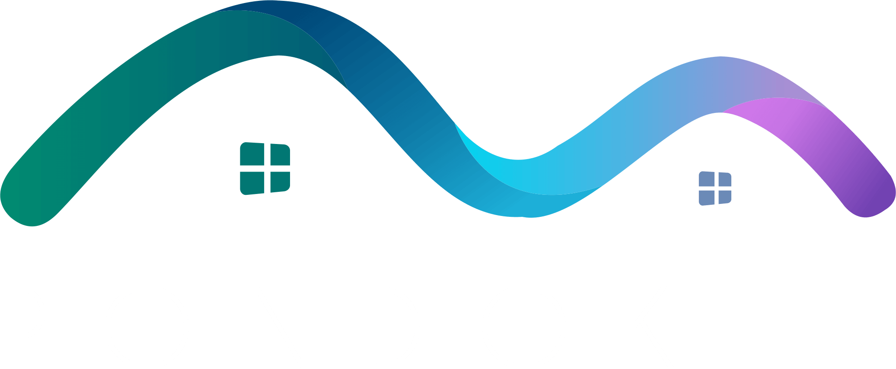
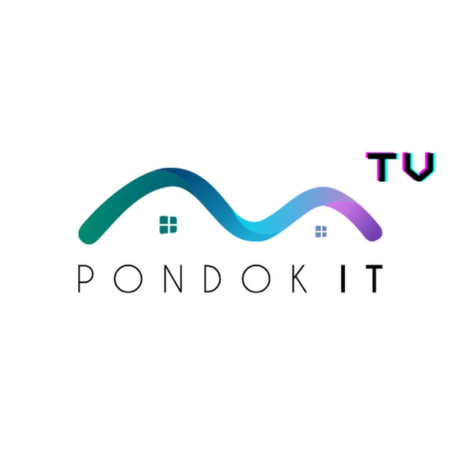
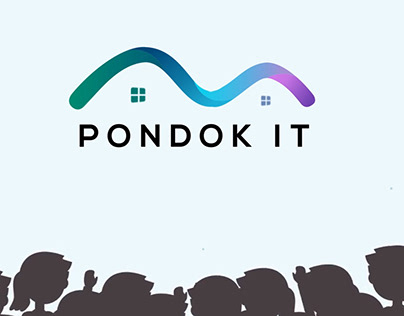

Jago Quran, Jago IT
Pondok IT merupakan lembaga pendidikan yang berfokus pada pembelajaran teknologi informasi dan pengembangan karakter Islami. Para santri dibimbing untuk memiliki kemampuan di bidang pemrograman, bisnis digital, serta keterampilan yang dibutuhkan di dunia kerja.
Selain belajar teori, peserta juga diberikan banyak praktik melalui berbagai proyek sehingga mampu menguasai dunia programmer dengan mudah.
| No | Program | Fokus Belajar |
|---|---|---|
| 1 | Backend | Laravel, PHP, NodeJS, MySQL |
| 2 | Frontend | HTML, CSS, JavaScript, React |
| 3 | Mobile | Flutter, React Native |
| 4 | Digital Marketing | SEO, Meta Ads, Google Ads |
| 5 | Content Creator | Editing Video, Fotografi |
| 6 | Desain Grafis | CorelDRAW, Photoshop, Canva |


Dengarkan profil Pondok IT berikut.